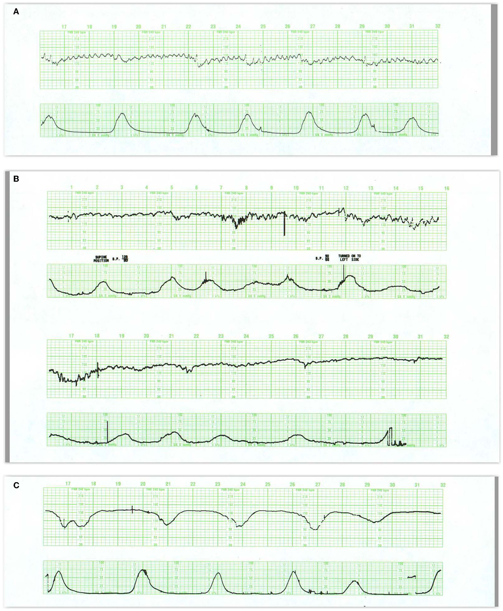
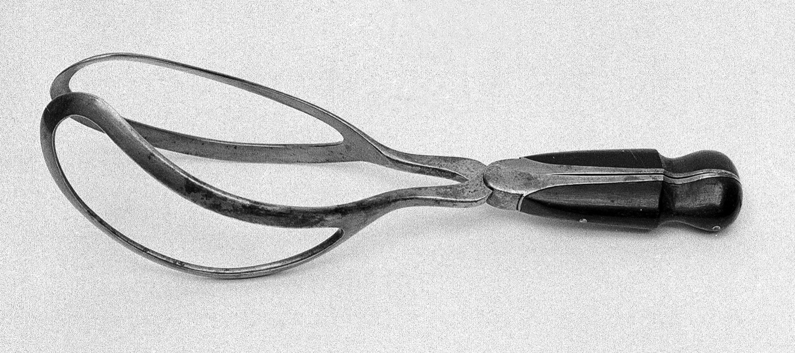

Página 12 · Vigilância aguda e cardiotocografia
Caso integrador e o gancho do fórceps
Um traçado com o batimento oscilando bem e uma desaceleração que coincide com a contração — DIP I, tudo tranquilo. A conduta é acompanhar. E a história segue: a paciente evolui, chega ao expulsivo, a cabeça está baixa e bem posicionada — e então 60 minutos passam sem progressão, com a paciente exausta. E agora?
Lendo o traçado do caso: DIP I, tudo tranquilo → acompanhar
O traçado do caso mostra variabilidade preservada com uma desaceleração coincidente com a contração — isto é, DIP I. Sem perda de variabilidade, sem DIP patológico. Aplicando o laudo: variabilidade normal exclui a Cat III; DIP I é benigno e admitido na Cat I; não há DIP II nem III. A leitura é tranquila, e a conduta é acompanhar o trabalho de parto. Nada a intervir no traçado.

A aplicação do laudo: variabilidade preservada e desaceleração coincidente com a contração — DIP I benigno do caso integrador.
No painel A, a FCF mantém oscilação basal preservada e apresenta quedas suaves, repetitivas, alinhadas temporalmente às contrações. O achado-chave é a coincidência vale–pico (DIP I / early). Aplicando o laudo: variabilidade normal exclui a Cat III, DIP I é admitido na Cat I → acompanhar, sem intervir no traçado. O nó do caso não é fetal, é a mecânica do expulsivo.
Fonte: Schifrin BS et al., Front Pediatr 2022, Fig. 7 (painel A) — CC BY 4.0 (legenda "do caso integrador", distinta do DIP I didático) · página de origem
A evolução ao expulsivo
Com o traçado tranquilo, a paciente evoluiu em 2 horas ao período expulsivo, com bolsa rota. A progressão foi boa até aqui — o problema não está no bem-estar fetal (o traçado é DIP I benigno), e sim no que vem a seguir, na mecânica do expulsivo.
A apresentação: cefálica OP
A apresentação é cefálica occípito-púbica (OP): a pequena fontanela (lambda) aponta para cima, em direção ao púbis. É a situação favorável — occipito anterior, a cabeça já rodada para "só desprender". A anatomia joga a favor: OP é a variedade de posição que melhor se desprende no parto vaginal.
Interativo: deslize a estação (0 → +3) e veja a relação com as espinhas isquiáticas.
O cenário que arma a decisão: apresentação cefálica occípito-púbica (OP), com a pequena fontanela (lambda) apontando para o púbis — variedade favorável, "só desprender" —, na estação +3 de De Lee (3 cm abaixo das espinhas isquiáticas). Deslize a estação e veja a apresentação descer no canal. A peça mostra o cenário; não resolve fórceps × cesárea.A altura: +3 de De Lee
A altura da apresentação é +3 de De Lee — 3 cm abaixo das espinhas isquiáticas. Na estação de De Lee, o zero está no plano das espinhas isquiáticas; +3 é bem baixo, a cabeça já profundamente insinuada no canal vaginal. Somando: apresentação favorável (OP) e altura baixa (+3). O feto está quase lá.
60 minutos sem progressão
E então o nó: após 60 minutos com atividade uterina adequada, não houve progressão; a paciente está exausta e pouco colaborativa. Contração boa, apresentação favorável, altura baixa — e mesmo assim o feto não desce. O bem-estar fetal está preservado (o traçado é benigno), mas o expulsivo estacionou e a mãe não tem mais força para o puxo.
E agora? O critério do fórceps
A conduta depende de decidir o critério de aplicabilidade do fórceps: se presente, o fórceps resolve o expulsivo mais rápido — apresentação OP, +3 de De Lee, tudo aponta para uma via instrumental viável; se ausente, indica-se cesárea. O desfecho — se essa paciente tem ou não critério de aplicabilidade para fórceps — fica em suspense, para ser desenvolvido na sequência da trilha.

O instrumento que a decisão do caso pode convocar: o fórceps obstétrico. Teaser — mostra a ferramenta, sem entregar ainda indicação, estação ou critérios de segurança.
As lâminas curvas e fenestradas (à esquerda) abraçam o polo cefálico; a articulação central e os cabos permitem tração controlada. O que o distingue de uma pinça cirúrgica comum é o tamanho das lâminas, o desenho pareado e a curvatura ampla — ramos longos e atraumáticos para aplicação cefálica.
Fonte: Wellcome Collection, via Wikimedia Commons — CC BY 4.0 · página de origem
Corredor de Casos — handoff para a etapa de fórceps
- Expulsivo OP · +3 De Lee · 60 min sem progressãoO cenário segue para a sequência da trilha (Caso 1 da próxima etapa), que responderá se há critério de aplicabilidade do fórceps. Aqui a pergunta fica aberta de propósito — a cardiotoco da filha (anedota de anteparto) não entra no fio.→ próxima etapa
Quiz — fixação
No traçado do caso: variabilidade preservada e desaceleração coincidente com a contração, sem perda de variabilidade e sem DIP patológico. Categoria e conduta do traçado?
- B) Correta. DIP I (coincidente, benigno) + variabilidade normal, sem DIP II/III = Categoria I → acompanhar. O problema do caso não é fetal, é a mecânica do expulsivo.
- A) Qualquer desaceleração pode assustar quem não checou o tipo. Cat III exige perda de variabilidade ≤5 e mais; nada disso está presente.
- C) Na dúvida, o candidato "sobe" para a II. Cat II é o meio-termo; aqui os critérios de Cat I estão todos satisfeitos.
- D) Confunde a indefinição da conduta obstétrica (fórceps?) com a leitura do traçado. O traçado é perfeitamente interpretável e tranquilizador.
Paciente em expulsivo, apresentação cefálica OP, +3 de De Lee, 60 min com dinâmica adequada sem progressão, exausta, com traçado tranquilo (DIP I). A decisão da via de parto depende de:
- B) Correta. Sem sofrimento fetal (DIP I benigno), o nó é a parada de progressão com mãe exausta; a decisão fórceps × cesárea passa pelo critério de aplicabilidade — OP e +3 favorecem a via instrumental, mas a resposta fica em suspense.
- A) Assume "intervenção = cesárea por sofrimento". Não há sofrimento fetal (traçado benigno); a indicação, se houver, é por parada de progressão, e não necessariamente cesárea.
- C) "Paciência" parece conservador, mas há distocia funcional. A paciente está exausta e sem progressão após dinâmica adequada; prolongar não é conduta.
- D) Trata "não progride" com "mais contração" reflexamente. Dinâmica já é adequada; mais ocitocina não vence uma parada com mãe sem força e pode gerar taquissistolia.
A pergunta fica aberta de propósito: se essa paciente tem — ou não — critério de aplicabilidade para o fórceps é o fio que a sequência da trilha puxa a seguir.